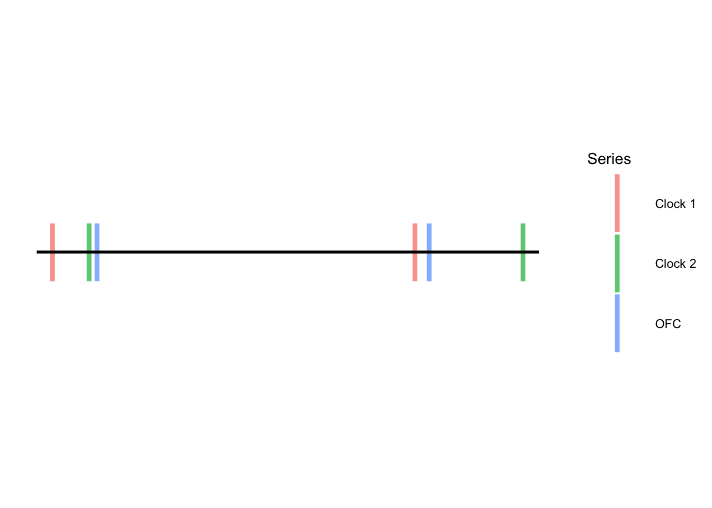

missing_index = pd.isnull(time_series_data)
print(missing_index.sum())Clock data interpolation TN draft
Introduction
The purpose of this report is to present a methodological approach for applying imputation and interpolation techniques to clock frequency data. This report is a result of collaborative research into statistical methods for the analysis of high-precision atomic clock data by the Statistical Engineering Division of the Information Technology Laboratory and the Time and Frequency Division of the Physical Measurement Laboratory.
Because of the high precision in observed data, the reproducible estimation of, say, atomic clock frequency ratios requires careful attention to data processing steps. The idiosyncrasies of processing clock data that we focus on in this report options for the treatment of missing data and for the comparison of low frequency data to high frequency data. We describe the nature of these challenges with supporting examples and we present recommendations for addressing these challenges in a transparent, reproducible manner.
Audience
Collaborators
Report Organization
The next section presents some background information and an example to provide context for the problem at hand. Section 3 discusses the initial necessary data exploration steps, Section 4 covers interpolation methods for handling multiple, misaligned data sets, and Section 5 concludes by summarizing the steps needed to produce a coherent final data set for estimation and inference.
Background
The challenge presented here has several layers that complicate a traditional time series analysis. Although the ultimate analysis is of a single time series, let’s call this the target series, the target series is computed based on calculations involving at least three individual time series, we will call these sub-series. Each sub-series is independent of the other(s) but each may contain missing values and is irregularly sampled, possibly at very different frequencies. Furthermore, the sub-series may have slightly or dramatically different start and end times.
The application that motivates this article is the analysis of atomic clock ratio data. In this context, there are at least four sub-series involved in deriving the target series; two independent clock time series consisting of shift values together with an indicator variable representing the quality of each observation and, for each clock, there is another time-series that is observed in accordance with the readings from an optical frequency comb (OFC). The comb experiment produces several time series, two of which match the two clock types used in the target series, the others of which may be used in the calculation of target series based on experimental settings.
Pavı́a-Miralles et al. (2010) provides a thorough review of interpolation techniques with an emphasis on temporal disaggregation and benchmarking. Pavı́a-Miralles et al. (2010) discusses both a temporal perspective and analysis in the frequency domain.
[Background on existing approaches for combining time series i.e. convolution of time series]
[Background on existing methods for univariate time series imputation] Howe and Champagne (2021), Pavı́a-Miralles et al. (2010), Lepot, Aubin, and Clemens (2017), Knotters and Heuvelink (2010), Eckner (2012)
[Background on existing work mapping low frequency series to high frequency one. AKA mixed frequency data analysis]
[Background on existing work on irregularly samples time series.] Shukla and Marlin (2019) Nieto-Barajas and Sinha (2015) Erdogan et al. (2005) Eckner (2012)
modeling clock data (percival?, create bib item and find data and location)
Nieto-Barajas and Sinha (2015) note that the study of unequally spaced time series can broadly be grouped into several different approaches. The first two dominant approaches are to approach the problem by deriving models for the unequally spaced data as is, or to reduce the irregularly sampled data to equally spaced observations first and then apply standard analysis techniques. The former approach…. Yet another perspective is to view the analysis of unequally spaced time series as a problem of missing data. Methods from this perspective may be evaluated by their ability to predict missing observations.@nieto2015
[Mention and reference work on spectral analysis of time series for atomic clock data] In this article, we restrict our focus to analysis in the time domain. In the example application of atomic clock ratio data, the results of interest include estimates of the mean and Allan deviation of the target series.
Data Exploration
Visualize Missing Data
Data visualization is an important first step to identify any missing data or unexpected patterns. It is crucial that individual time series are visualized before they are combined. This step also helps with the determination of identifying the overlapping window of observations which is the topic of the next section.
To understand the magnitude of any missing data issues, one can count the missing observations in each time series. For example, the following Python code reports the total number of missing data points (i.e. truly empty or null data values).
While this numerical summary of missing values is informative, it is not enough to identify any unusual patterns of missingness. For this, there is no substitute for a visual analysis of the data. A useful Python package for visualizing missing data is the package “missingno” which can be implemented as follows.
import missingno as msno
msno.matrix(time_series_data)
plt.show()The treatment of long sequences of missing data is distinct from the treatment of individual missing data points. While common imputation techniques for univariate time series [cite sources] can be implemented for individual missing values, long sequences of missing values indicate a need to reconsider the start and end times for each sub-series. Large gaps of missing data must be factored in to the next step where one decides which window of observations to analyze in the target series. This is the topic of the next section.
[Add note of caution about how keeping missing data until end is not advisable.]
[Add discussion on data deemed poor quality (IS_GOOD variable) vs missing data]
Determine Overlapping Window of Observation
An important characteristic of clock and comb data is that the beginning and end point of observations may vary among each sub-series. If there are any large gaps of missing data in the clock shift files, this should also be taken into consideration when determining the start and end time points of the data. Therefore, a necessary component to preparing the data for analysis is first identifying the overlapping windows of observation for each time series. The goal of this step is to find a time interval \([t_{i}, t_{j}]\) that includes the largest possible intersection of non-missing observations from each sub-series.
Consider the figure below which marks the start and end points of observations for each sub-series, a time series of comb data, a time series from two different atomic clocks. If there are no large gaps of missing values in any of these series, the largest window of observation for the target series (which in this case is a ratio of the two clock values) begins at the first time point of the comb series and ends at the last time point of Clock 1’s series. Even though there are more observations outside of this range, these observations cannot be used because values from each time series are necessary to construct the target series.

For this reason, the target time series cannot be computed over any time intervals containing sequentially missing values for one or more of the sub-series. It is more accurate in such cases to consider data before and after a large gap as separate time series with smaller sample sizes. Thus, in the case where a sub-series contains at least one large gap of missing values, the final overlapping window of observation will be considerably smaller as will the target series sample size. [Reiterate note about how keeping missing values until the end is not a valid approach - even if it can be computed with software.]
In addition to visualizing the sub-series, the follow Python functions may be useful for detecting the overlapping window of observation for the target series.
# Extracts series element that is as close to the target as possible without going over.
def lb_extract(target, data):
inx = 0
stopper = 1
while stopper == 1:
if data[inx] <= target:
inx += 1
else:
return inx
# Extracts series element that is as close to target as possible without going under.
def ub_extract(target, data):
inx = 1
stopper = 1
while stopper == 1:
if data[len(data)-inx] >= target:
inx += 1
else:
return len(data)-inx Interpolation
Frequency Alignment
The culmination of the previous data processing steps yields several independent sub-series that begin and end at the same time points but that may be observed with very different frequencies. At this stage, there is no missing data in any of the sub-series; however, because each series is comprised of observations along an irregular time scale, we are not yet ready to compute the target series. In the context of atomic clock data, the comb time series are typically observed more regularly than any individual clock shift time series. Thus the comb data represent a high-frequency sub-series and the clock shift data are low-frequency sub-series in comparison. Furthermore, it may be the case that each clock sub-series is sampled at very different rates.
Without loss of generality and for the sake of illustration, let us suppose that we are constructing a target series from an optical frequency comb sub-series and two clock sub-series. Suppose further that Clock 1 is observed with either a similar or a lower frequency than Clock 2 and that Clock 2 is observed with a similar frequency as the comb sub-series. Symbolically, we are assuming \(n_{C1} \leq n_{C2} \approx n_{OFC}\). In this context, the target series is a ratio time series for any two clocks. To derive the target series, the time points of observations for each sub-series must be in alignment with one another. That is, the times of observation for each series, \(t_{C1,i} = t_{C2,i} = t_{OFC,i}\) for \(i = 1, \dots, n\). Note that this alignment condition can be met even if the series are irregularly sampled; irregular sampling for, say, Clock 1 would simply mean that \((t_{C1, i+1} - t_{C1, i})\) is not equal for all \(i \in \{2, \dots, n_{C1}\}\). Here we give an overview of several methodological approaches one may take to align each series.
Method 1: Align Clock 1 with the observations of the comb. Then align Clock 2 with the observations of the comb. Proceed to derive the ratio time series for analysis. The result of this approach will be a time series with the same irregularities in sampling as the comb series.
Method 2: Realign the comb time series so that the observations are regularly sampled along the time interval of interest, i.e so that \((t_{OFC, i+1} - t_{OFC,i})\) are equal for all \(i \in \{2, \dots, n_{OFC}\}\). Align Clock 1 with the new comb series. Align Clock 2 with the new comb series. Proceed to derive the ratio time series for analysis. The result of this approach will be a regularly sampled time series.
Method 3: Align Clock 1 with the observations of Clock 2. Then align the comb with Clock 2. Proceed to derive the ratio time series for analysis. The result of this approach will be a target series with the same irregularities in sampling as in Clock 2. This approach essentially disregards (or masks) comb data for the sake of matching the observational time points of Clock 2.
Method 4: Realign the time series from Clock 2 so that the observations are regularly sampled along the time interval of interest, i.e so that \((t_{C2, i+1} - t_{C2,i})\) are equal for all \(i \in \{2, \dots, n_{C2}\}\). Align Clock 1 with the new series for Clock 2. Align the comb series with the new series for Clock 2. Proceed to derive the ratio time series for analysis. The result of this approach will be a regularly sampled time series.
Note that none of the methods listed above suggest realigning a high frequency series to match a low frequency series. This is because such an approach would sacrifice valuable information contained in the higher frequency series and thus is generally not advisable. Methods 1 and 3 only require two separate interpolation steps. The drawback of these two methods, however is that the resulting time series is still irregularly observed. If the sampling irregularities of the target series are so small that that are practically meaningless, then these approaches are preferable to the others because they require fewer interpolation steps.
Methods 2 and 4, on the other hand, each require three separate interpolation steps. The advantage of these methods is that they result in a regularly sampled target series. Depending on the type of analysis, having an irregularly sampled time series may or may not be of concern. For example, if the analysis is based upon a multitaper spectral approach such as that in [cite clock paper], then the sampling irregularities do not present an issue. [cite sources as to why not]. However, if the analysis is to proceed in [the time domain?], irregularities in the observational frequency of the time series will bias common estimates of interest such as the mean and AVAR. [cite sources]
Within the context of this example where the target series is a ratio of data from two separate clocks, it is worth considering how variable the values in the comb sub-series are. If these values are relatively constant, with practically negligible variability in the values associated with each clock, then Methods 3 and 4 may be preferable to Methods 1 and 2 because masking the values from the comb sub-series will be of little to no consequence.
Interpolation techniques
Once a method for alignment is determined, the implementation of the alignment will occur through time series interpolation. There are many different techniques for interpolating time series data. [Cite some sources.]
Pavı́a-Miralles et al. (2010)
Lepot, Aubin, and Clemens (2017)
Nieto-Barajas and Sinha (2015)
“A comparative analysis of time series is not feasible if the observation times are different Nieto-Barajas and Sinha (2015).” “Any attempt of comparative or associative analysis between… two time series requires them to have both been measured at the same times Nieto-Barajas and Sinha (2015).”
“The ranking of desirable interpolation methods (obtained through a trade-off of criteria) could be strongly dependent on the size of the gaps, and the nature of recorded phenomena and data Lepot, Aubin, and Clemens (2017).”
For the convolution of univariate time series…
Conclusion
The process we have outlined for aligning the observational frequency of clock time series follows these steps:
Step 1) Process the data for each time series to determine the final window of observation and exclude low-quality data.
Step 2) Determine if there are any missing data and decide whether or not to impute values that are missing.
Step 3) Determine which method of frequency alignment will be used and decide upon an interpolation technique to implement the alignment.
Calculate clock frequencies by adding together comb frequencies and shift data, scaled by the total correction amount
[all of this analysis is occurring within the time domain? not the frequency domain?]
References
Eckner, Andreas. 2012. “A Framework for the Analysis of Unevenly Spaced Time Series Data.” Preprint. Available at: Http://Www. Eckner. Com/Papers/Unevenly_spaced_time_series_analysis, 93.
Erdogan, Emre, Sheng Ma, Alina Beygelzimer, and Irina Rish. 2005. “Statistical Models for Unequally Spaced Time Series.” In Proceedings of the 2005 SIAM International Conference on Data Mining, 626–30. SIAM.
Howe, David A., and Chloe Champagne. 2021. “Time-Series Imputation Algorithm.” https://doi.org/https://doi.org/10.36227/techrxiv.16926694.v1.
Knotters, Martin, and GBM Heuvelink. 2010. “A Disposition of Interpolation Techniques.” Wettelijke Onderzoekstaken Natuur & Milieu.
Lepot, Mathieu, Jean-Baptiste Aubin, and François HLR Clemens. 2017. “Interpolation in Time Series: An Introductive Overview of Existing Methods, Their Performance Criteria and Uncertainty Assessment.” Water 9 (10): 796.
Nieto-Barajas, Luis E, and Tapen Sinha. 2015. “Bayesian Interpolation of Unequally Spaced Time Series.” Stochastic Environmental Research and Risk Assessment 29 (2): 577–87.
Pavı́a-Miralles, Jose Manuel et al. 2010. “A Survey of Methods to Interpolate, Distribute and Extrapolate Time Series.” Journal of Service Science and Management 3 (04): 449.
Shukla, Satya Narayan, and Benjamin M Marlin. 2019. “Interpolation-Prediction Networks for Irregularly Sampled Time Series.” arXiv Preprint arXiv:1909.07782.